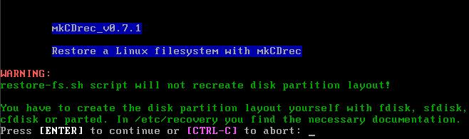
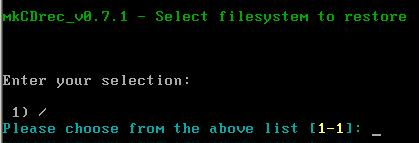
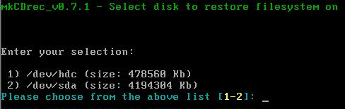
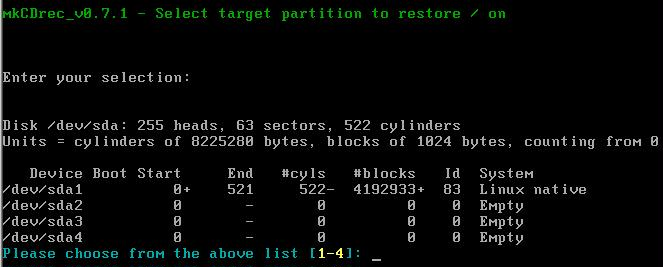
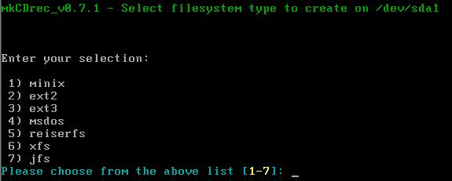
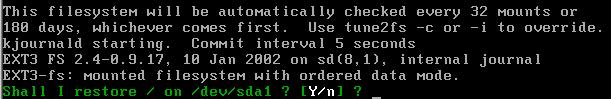
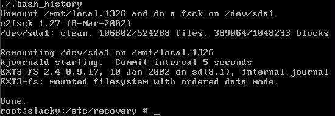
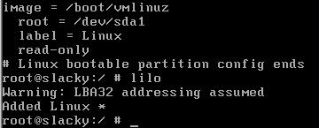

Sometimes you do not want to restore a complete system or just one disk, but only one particular file system. In that case restore-fs.sh is the script you need. If the archives are not on a CD-ROM make sure the tape is inserted, or the file system has been mounted where original backups were stored on.
As before go into the /etc/recovery directory and type ./restore-fs.sh to launch it.

This script has been kept as simple as possible, just follow the questions.


Do not worry the following question will ask you on which partition you want to restore:

Be aware; make no mistake on which partition you select! Otherwise unpleasant situations can be created.
The next question gives you the chance to change the original file system type! However, only select the file system type you can actually use. With other words make sure that your Linux kernel is capable of using the select type and for which you have the necessary tools on board.

It will create a file system on your partition, one of the list above, and only then the following question will be asked.

Select Y to restore the archive from the backup medium, be it CD-ROM, tape or anther disk.

Do manually a “chroot /mnt/local “ and edit /etc/lilo.conf file if needed. Thereafter, just run “lilo” to make the disk bootable.

The file system has been restored and in our case we activated lilo too. We are ready to reboot the system.